Recortando Clips con Avidemux
Avidemux es un editor y convertidor simple de video. A diferencia de Handbrake y FFMpeg, solo tiene soporte limitado para canales múltiples de audio/video/subtítulos. Además, su soporte de codecs es más limitado que el de ffmpeg (pero mayor que handbrake). Por último, fue creado originalmente para trabajar con archivos en el formato AVI de Microsoft Windows, por lo que otros formatos/codecs no trabajan propiamente en circumstancias especiales.
A pesar de que es una herramienta muy simple, con algunos errores críticos, es muy útil para las veces en las que tengas un clip de un video y quieras remover una sección del video o tomar sólo una sección del mismo y guardarla en un archivo aparte. Comenzado con nuestro clip de sintel, vamos a hacer ambas operaciones.
Comenzemos abriendo el clip en Avidemux:
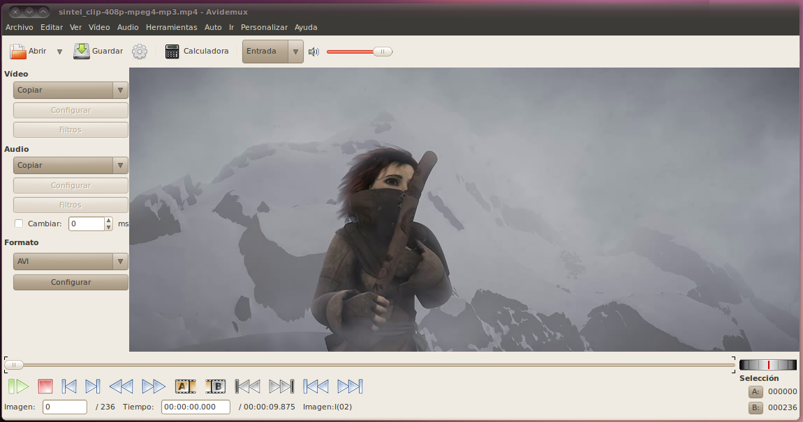
Recortando un Clip
Vamos a establecer los parámetros de codificación desde los menús a la izquierda. Para este ejercicio vamos a usar MPEG-4 ASP (avcodec), MP3 (lame), y MP4. Cunado hagamos clic en el botón de guardar, el programa va a guardar la actual selección (luego de pedirnos un nombre de archivo) codificando nuestra selección al formato indicado. Esto puede ser un proceso que tome largo tiempo para archivos grandes, asi que es posible escoger sólo "copiar", en cuyo caso el programa no va a re-codificar el video; sin embargo esto puede conducir a errores.
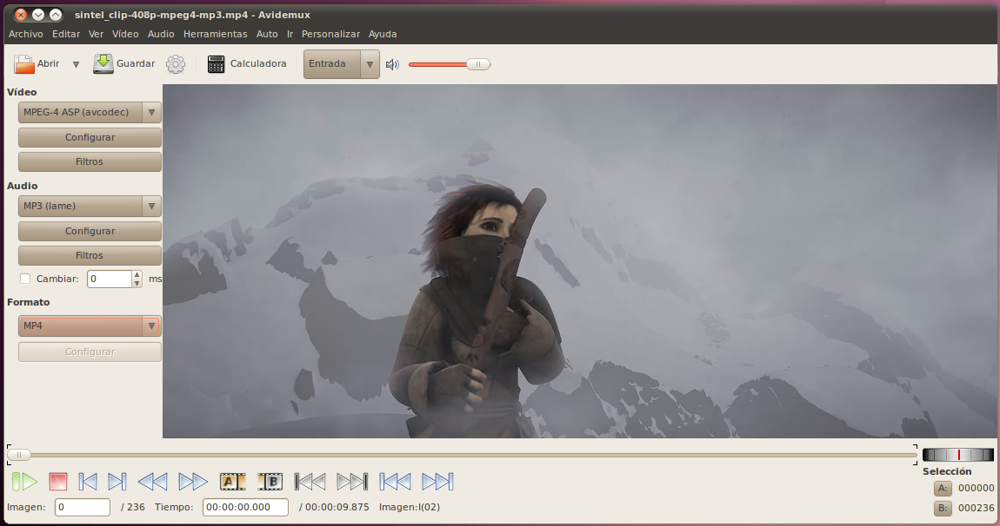
Para nuestro primer ejemplo, queremos que la película sea más corta, recortando el área oscura alrededor del título de introducción. Vamos a usar el botón de "Next Keyframe" (siguiente keyframe) para avanzar el video hasta que podamos ver el título:
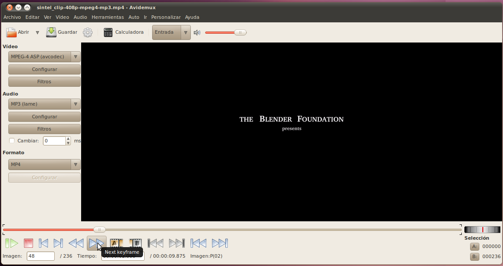
Pero queremos comenzar a recortar antes de ver el título, así que vamos a ir una imagen hacia atras:
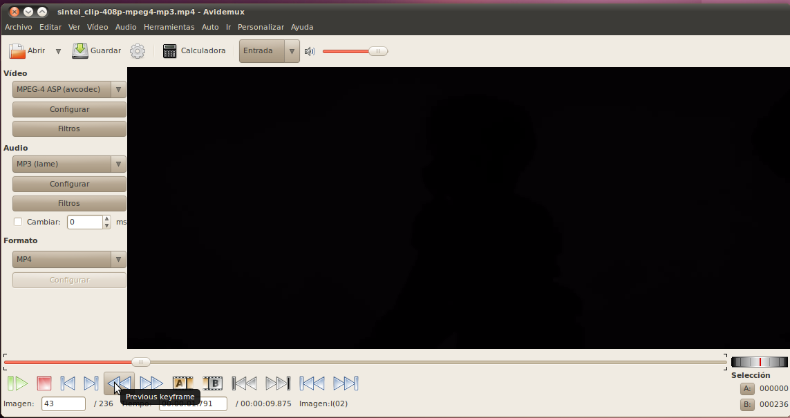
Esto nos deja en un pantalla completamente oscura. Si retrocedemos más vamos a comezar a ver la silueta de la escena previa.
Ahora queremos selecciona este como el punto de partida de nuestra selección:
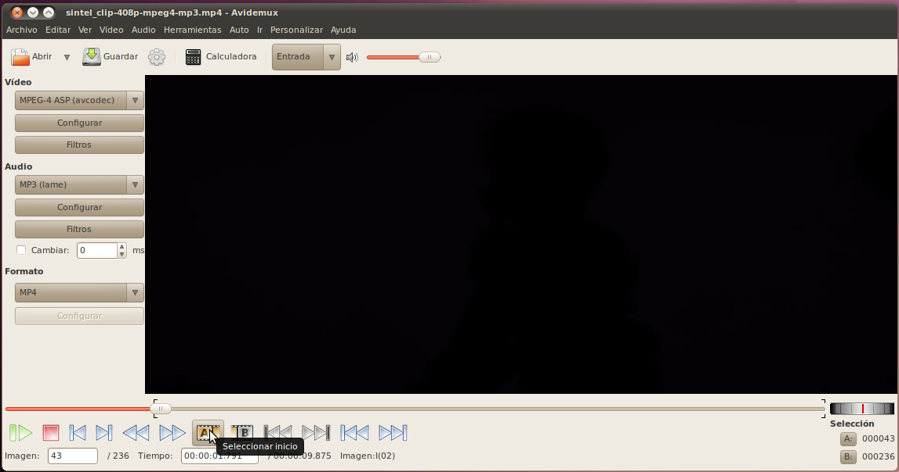
Una vez tenemos el punto de partida, podemos usar el botón de "Next Keyframe" para avanzar hasta donde no vemos nada más del color negro, y luego continuar hasta que volvemos a ver la pantalla completamente oscura.
Ahora queremos marcar el punto final de nuestra selección:
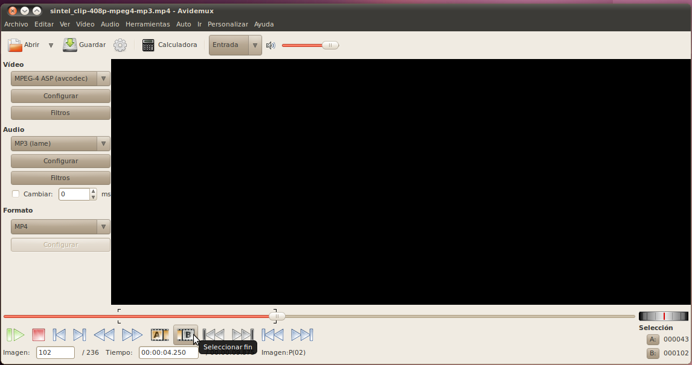
Finalmente, estamos listos para cortar la parte no deseada de nuestro video:
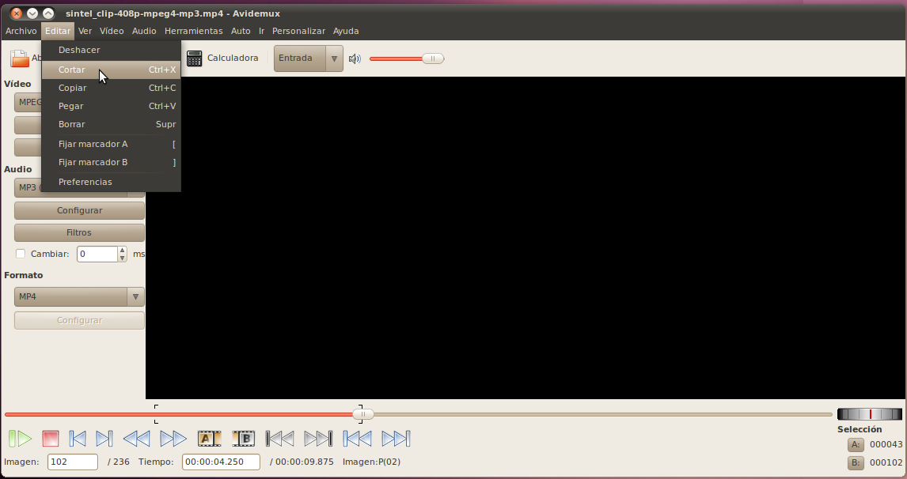
Ahora queremos guardar nuestro video, sin la sección oscura. No nos servirá sólo hacer clic en el botón de guardar, porque eso solamente va a guardar nuestra selección, y ya que acabamos de remover la selección del video, al momento no hay ninguna selección que guardar! Queremos hacer una selección del video entero. Es fácil, simplemente ve al comienzo del clip:
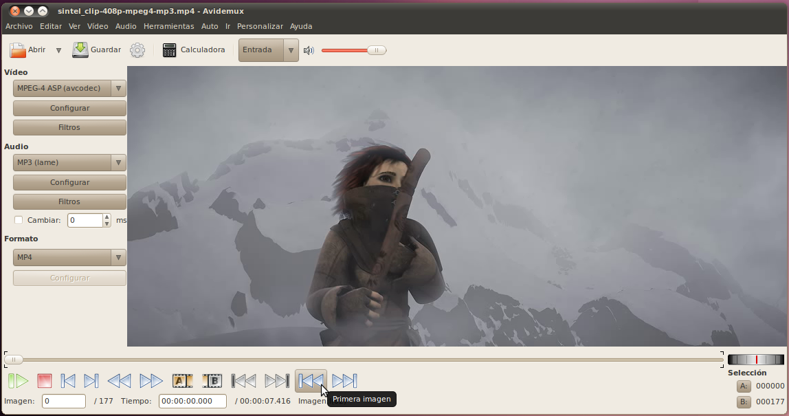
Y selecciona el botón para marcar el comienzo de la selección.
Ahora queremos ir al final del clip:
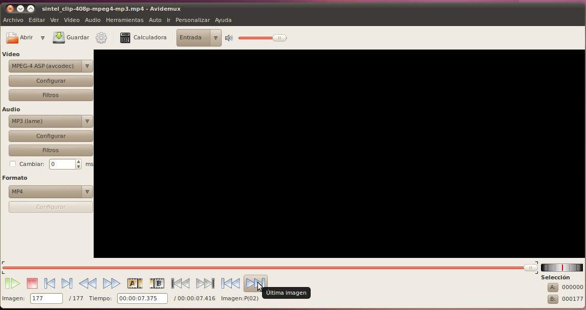
Y vamos a oprimir el botón para marcar el final de la selección. Esto nos va a dar una selección del clip entero.
Ahora podemos hacer clic en el botón de guardar, y especificar el archivo en el cual queremos almacenar el video final.
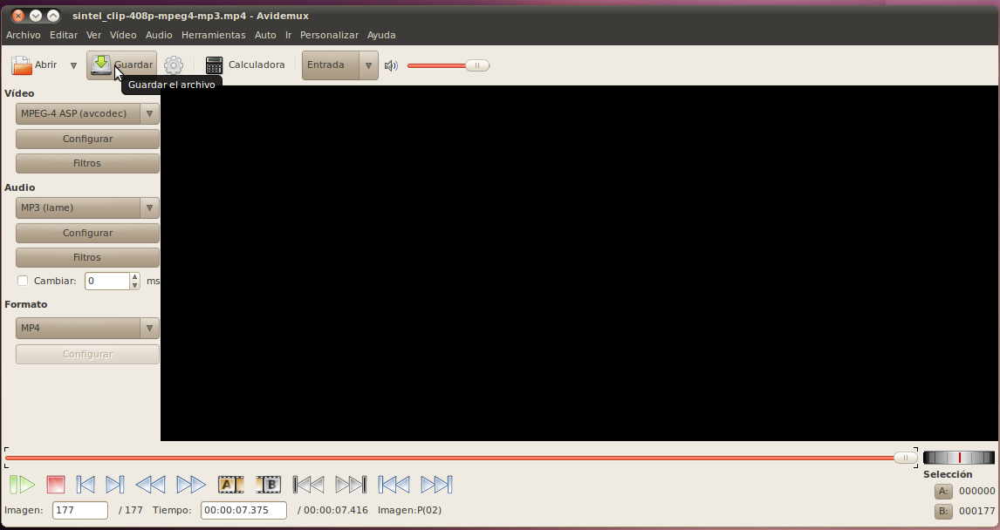
¡Eso es todo!
Grabando un Segmento Individual
Para nuestro próximo ejercicio, vamos a escojer sulamente el video que contiene al hombre viejo y guardar ese segmento en un archivo aparte.
Al igual que en el ejercicio anterior, podemos usar los botones de "next keyframe" y "previous keyframe" (keyframe anterior) para encontrar el lugar en el que nuestro clip comienza. En este punto podemos marcar el comienzo de nuestra selección. Luego podemos avanzar hasta justo después de que la escena con el hombre termina. En este caso la imagen que ocurre inmediatamente después de esto contiene no al hombre, sino a la niña. En vez de retroceder a la imagen anterior y luego tener que avanzar varias imagenes en el video, podemos simplemente ir a la imagen con la niña y leugo retroceder sólo una imagen:
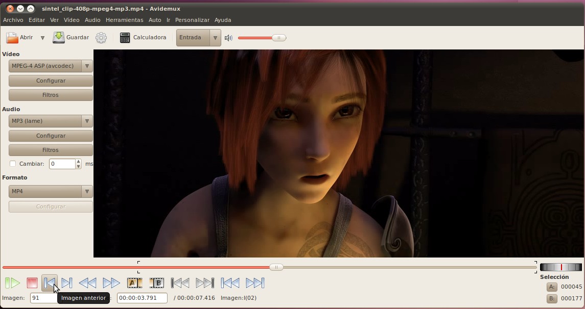
En este punto tenemos la última imagen en la pantalla y podemos oprimir el botón para marcar el final de la selección.
Ahora que tenemos una selección del video que queremos, podemos oprimir el botón de guardar y seleccionar el nombre del archivo que queremos para este video.
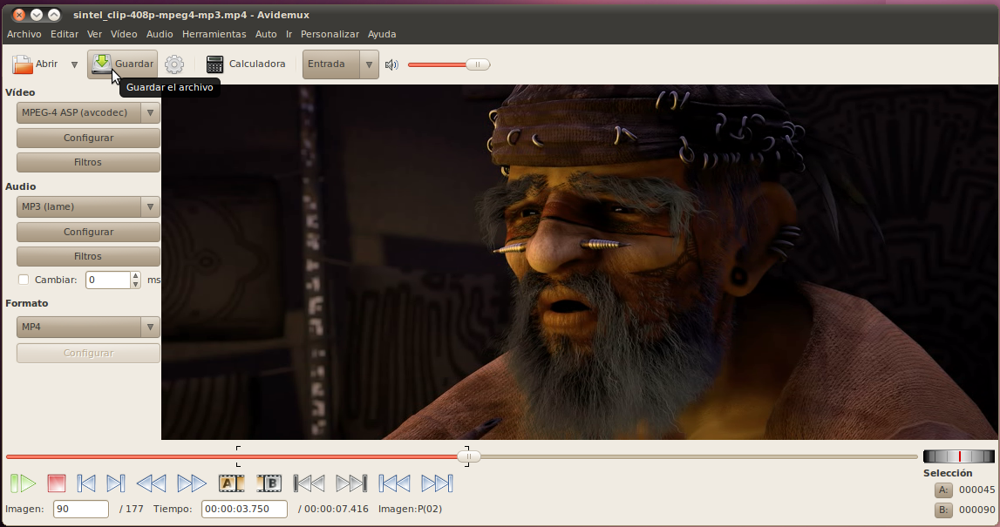